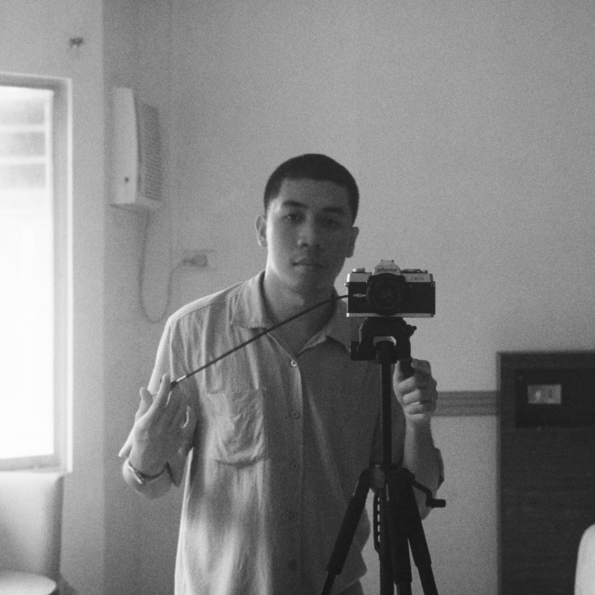

I'm Jero Lapore, a photographer — or at least trying to be one — from Kabankalan City, Negros Occidental, Philippines. I mostly shoot on film, drawn to its raw textures, imperfections, and the patience it teaches. I see the camera as an extension of myself, not just a tool but a mirror of how I see, feel, and exist in the world. Through it, I try to capture not just moments, but fragments of thought, silence, and truth. Whether it's a quiet street scene or a still corner of home, each frame reflects how I view the world — slow, honest, and always evolving.